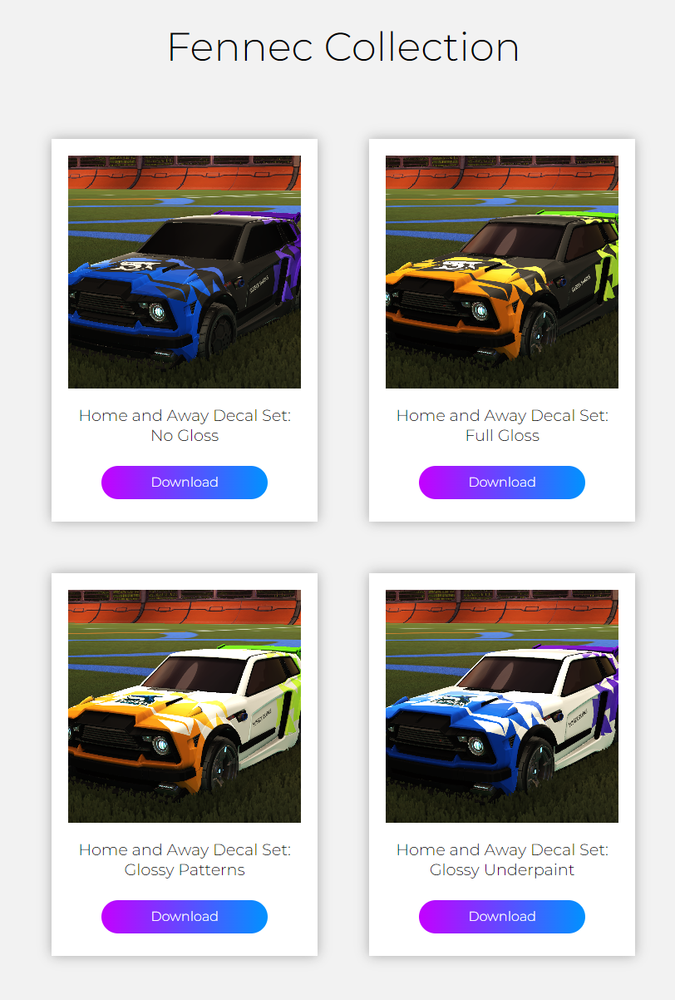

A list of all the projects I'm working on.
check them out
This is a project that I started in 2024 when I wanted to build a game inspired by the Battlefield series by Electronic Arts. Going into this, I knew that it would be quite challenging as I had never tried implementing replication in C++ before.
I managed to successfully implement replicated locomotion in the game. Although there are still quite a lot of things I need to polish off. I also managed to replicate interaction with objects such as doors. However, I found a bug where if you keep spamming interact, the replication will (although not very often) get out of sync. Unfortunately, that is an issue I do not yet know how to fix. Further down development, I will probably add a proning system in the game as well. I got most of my animations through the Unreal sample projects and mixamo.
Due to the lack of assets. Mostly because I couldn't find any on the web. I had to create some first person shooter animations for my game. I used the Unreal Engine 4 Mannequin Skeleton Control Rig to make these animations as the first person arms thankfully shared the same skeleton. I made some pistol idle, firing, and walking animations, but there are sitll a lot more animations I need to make. I also want to implement some 2 player animations further down the line, like stabbing animations.
I also created a simple game menu system using blueprints and UMG. The keybinds page allows you to change the keybindings using the Input Key Selector. I used Unreal Engine 5's Enhanced Input Subsystem for this project since the old Input Mapping system is deprecated. For the graphics section, I made a macro that utilizes some other custom functions to make my life easier when linking up all the nodes with the button events.
Rocket League Broadcast Manager is an evolving project aimed at simplifying and enhancing the broadcasting process for Rocket League esports matches. Crafted with a focus on practicality and efficiency, this tool caters to the needs of tournament organizers and broadcasters alike.
The application provides an easy-to-use interface for managing and broadcasting Rocket League events, ensuring a straightforward experience for users involved in esports broadcasting.
At its core, the project employs a well-organized database powered by Apache and MySQL. This database efficiently stores information about teams, matchups, and players, facilitating quick retrieval during broadcasts.
A notable feature is the capability to generate real-time broadcast overlays. By pulling live data from the database, the application seamlessly integrates information into the overlay, offering viewers up-to-the-minute details on teams, matchups, and player statistics. As well as extra screens like a waiting screen showing match details and previews. Here is the overlay in action for the 2023 Sussex vs Brighton Varsity event with me casting the match :D
The series score is a little bugged though, or could be a human input error :(
Beyond basic broadcasting, the application includes a statistics tracking system. It maintains a record of team and player performance across multiple broadcasted games, providing valuable insights into trends and achievements.
Another feature I am planning to implement is instant replay. Electron can be used to capture audio and video from the computer. This means the program can stitch replays together, allowing users to play a highlight reel at the end of matches.
Utilizes Apache and MySQL for robust and secure database management.
Developed using HTML, PHP, CSS, and JavaScript to ensure a responsive and visually appealing user interface.
Powered by Electron, offering a cross-platform desktop application for accessibility.
Some decals I made for the Uni Rocket League eSports tean
link to decals website 